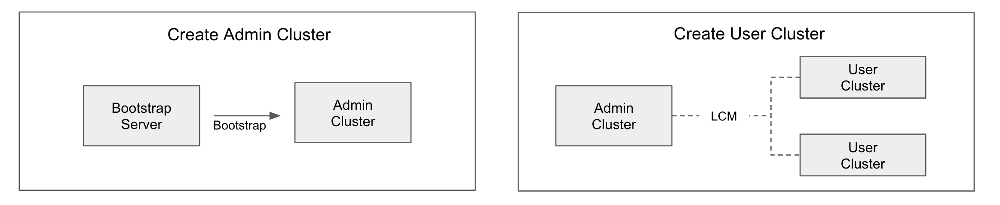

Quick Start¶
Summary¶
SKT Enterprise Kubernetes Solution은 Public Cloud에 GitOps 기반으로 Kubernetes distro를 배포/관리한다.
본 문서는 AWS와 Github 기준으로 작성되었다.
SKT Enterprise Kubernetes Solution은 Admin Cluster 생성과 User Cluster 생성 두 단계로 설치된다.
- Admin Cluster는 Bootstrap Server 구축 후, 제공되는Script를 통해 생성 된다.
- User Cluster는 제공되는 CLI를 통해 생성된다.
본 Release는 Admin Cluster 생성 자동화는 지원하지 않는다.
Quickstart는 편의를 위해 제공되는 Bootstrap script 를 활용한다.

Prerequsition¶
- Bootstrap Server
HW: AWS EC2 instance 기준 t2.medium, 10GB (GP3)
OS: Ubuntu 20.04 - SSH PEM Key
Bastion node SSH PEM key (ex. quickstart) - AWS Account
AWS policy : tks-capa.json, tks-node.json, tks-ec2.json, tks-s3.json
AWS ACCESS KEY ID, AWS ACCESS KEY , 위 AWS policy 적용
AWS에 quickstart등록 - Github Account
Github Token User or Organization name (ex. github.com/demo-decapod10 [참고: Decapod10])
Create Admin Cluster¶
Bootstrap Server에서 Admin Cluster bootstrap 절차 실시
- pem file 생성
Script pem file명과 AWS에 들록한 이름은 같아야 한다. 주의! 확장자 없이 파일을 만들어야 한다.$ cd ~ $ vi quickstart $ chmod 400 quickstart - bootstrap script 실행
$ cd ~ $ curl -L https://github.com/openinfradev/tks-mgmt-cluster-deploy/releases/download/v2.0.0-rc2/install-admin.sh -o quickstart.sh $ chmod +x quickstart.sh $ ./quickstart.sh 넘겨받은 파일 - /home/ubuntu/ - 이 없어요.. ssh key는 aws의 해당 지점에 준비되어야 하며 key 파일도 로컬에 준비되어야 합니다. aws에서 생성한 ssh key 파일을 입력하세요.(type q to exit) : quickstart ... ... === Finished. Check the status of all cluster API resources in the admin cluster and use the bastion host: 999.999.999.999 ===
Post-install Admin Cluster¶
Admin Cluster의 bastion host에서 Admin Cluster에 TKS Service 설치 및 사용을 위핸 CLI tool 설치
- Admin Cluster에 필요Tool 설치: kubectl, helm, tksadmin
$ cd ~ $ curl -LO "https://dl.k8s.io/release/$(curl -L -s https://dl.k8s.io/release/stable.txt)/bin/linux/amd64/kubectl" $ sudo install -o root -g root -m 0755 kubectl /usr/local/bin/kubectl $ mkdir ~/.kube $ cp ~/tks-mgmt-cluster-deploy/ kubeconfig_{ex.tks-admin-quickstart} ~/.kube/config $ curl -fsSL -o get_helm.sh https://raw.githubusercontent.com/helm/helm/main/scripts/get-helm-3 $ chmod 700 get_helm.sh $ ./get_helm.sh $ curl -LO https://github.com/openinfradev/tksadmin-client/releases/download/v2.0.0-rc2/tksadmin-client_2.0.0-rc2_Linux_x86_64.tar.gz $ tar xvzf tksadmin-client_2.0.0-rc2_Linux_x86_64.tar.gz tksadmin $ sudo install -o root -g root -m 0755 tksadmin /usr/local/bin/tksadmin -
Admin Cluster를 argocd 에 등록
Admin Cluster에 설치된 Cluster API를 사용하기 위해, Admin Cluster를 Argo CD에 등록하는 절차다.$ ARGOCD_SERVER=$(kubectl get node | grep -v NAME | head -n 1 | cut -d' ' -f1) $ ARGOCD_PORT=$(kubectl get svc -n argo argo-cd-argocd-server -o=jsonpath='{.spec.ports[0].nodePort}') $ ARGOCD_PASSWD=$(kubectl -n argo get secret argocd-initial-admin-secret -o jsonpath="{.data.password}" | base64 -d) $ CURRENT_CONTEXT=$(kubectl config current-context) $ argocd login --plaintext $ARGOCD_SERVER:$ARGOCD_PORT --username admin --password $ARGOCD_PASSWD $ argocd cluster add $CURRENT_CONTEXT --name tks-admin -y -
Admin Cluster에 TKS Service 설치
$ kubectl create ns tks $ helm repo add tks https://openinfradev.github.io/helm-repo $ helm repo update $ helm install tks-info tks/tks-info -n tks $ helm install tks-contract tks/tks-contract -n tks --set args.revision=release-v2 $ helm install tks-cluster-lcm tks/tks-cluster-lcm -n tks --set args.gitAccount={ex.demo-decapod10} $ helm install tks-batch tks/tks-batch -n tks - Install CLI
- Default contract 생성
TKS는CaaS로 활용할 수 있게 설계되었다. 따라서 Multi-tenant를 고려 했고, Tenant는 Contract과 1:1 Mapping 으로 설계되었다. TKS CLI는 편의를 위해 Default contract 생성 기능을 제공한다.## Solution 자체는 multi-tenant 지원을 전제로 개발됨. contract가 tenant를 의미함. 편의를 위해 default contract 생성기능 사용 $ tksadmin contract create default Using config file: /home/ubuntu/.tks-client.yaml Contract Name: default Proto Json data... { "contractor_name": "default", "quota": { "cpu": "1200", "memory": "1200", "block": "1200" }, "available_services": [ "LMA", "SERVICE_MESH" ], "csp_name": "aws" } csp_id:"54b98dee-17b5-42df-ab16-c7bb2aafd12d" contract_id:"aede96fe-5cbe-402e-b163-27abd2511986" $ tks cluster list Using config file: /home/ubuntu/.tks-client.yaml No cluster exists for specified contract!
Create User Cluster¶
- user cluster (quickstart) 생성
admin clutser의 bastion node에서 실시합니다.$ tks cluster create quickstart Using config file: /home/ubuntu/.tks-client.yaml Proto Json data: { "name": "quickstart", "conf": { "num_of_az": 3, "machine_replicas": 3 } } Response: id:"66324f7d-cb7b-43f5-a0b5-a756f09f7d24" Success: The request to create cluster quickstart was accepted. $ tks cluster list Using config file: /home/ubuntu/.tks-client.yaml NAME ID STATUS CREATED_AT UPDATED_AT quickstart 66324f7d-cb7b-43f5-a0b5-a756f09f7d24 RUNNING 2022-04-27 02:00:59 2022-04-27 02:16:35 - User Cluster 접근
Admin Cluster에 Cluster ID를 이름으로 갖는 Namespace가 생성되고 필요한 Resource들이 모여 있다.
Cluser ID를 Prefix로 하는 Kubeconfig가 Secret 형태로 저장되어 있다.$ kubectl get secret 66324f7d-cb7b-43f5-a0b5-a756f09f7d24-kubeconfig -n 66324f7d-cb7b-43f5-a0b5-a756f09f7d24 -o jsonpath={.data.value} | base64 -d > quickstart $ kubectl --kubeconfig quickstart get no NAME STATUS ROLES AGE VERSION ip-10-0-114-187.ap-northeast-2.compute.internal Ready <none> 13m v1.22.5 ip-10-0-161-116.ap-northeast-2.compute.internal Ready <none> 13m v1.22.5 ip-10-0-171-149.ap-northeast-2.compute.internal Ready control-plane,master 12m v1.22.5 ip-10-0-177-77.ap-northeast-2.compute.internal Ready <none> 13m v1.22.5 ip-10-0-192-96.ap-northeast-2.compute.internal Ready <none> 13m v1.22.5 ip-10-0-196-51.ap-northeast-2.compute.internal Ready <none> 13m v1.22.5 ip-10-0-215-105.ap-northeast-2.compute.internal Ready control-plane,master 14m v1.22.5 ip-10-0-76-5.ap-northeast-2.compute.internal Ready control-plane,master 13m v1.22.5 ip-10-0-87-223.ap-northeast-2.compute.internal Ready <none> 13m v1.22.5 - Discovery
3개의 Master node와 6개의 Worker node로 구성됨을 알 수 있다.
Quickstart는 크게 2종류의 Worker node pool를 제공한다.- A.K.A TACO Node
AWS Machine Pool를 활용하여 HA를 제공한다. TKS가 제공하는 Service가 설치되는 Node이다.
kubectl get mp -n 66324f7d-cb7b-43f5-a0b5-a756f09f7d24 NAME CLUSTER REPLICAS PHASE AGE VERSION 66324f7d-cb7b-43f5-a0b5-a756f09f7d24-taco-mp-0 66324f7d-cb7b-43f5-a0b5-a756f09f7d24 3 Running 51m v1.22.5 -
A.K.A Auto Scaling Node
Horizonal Auto scaling을 기능을 제공하기 위해, Clutser Auto Scaler를 사용한다. 따라서 AWS의 Machine Pool이 아닌 개별 Machine Deployment로 Node를 생성하고, 생성 여부는 Cluster Auto Scaler에서 판단한다. 고객의 Workload가 설치되는 Node이다.$ kubectl get md -n 66324f7d-cb7b-43f5-a0b5-a756f09f7d24 NAME CLUSTER REPLICAS READY UPDATED UNAVAILABLE PHASE AGE VERSION 66324f7d-cb7b-43f5-a0b5-a756f09f7d24-md-normal-0 66324f7d-cb7b-43f5-a0b5-a756f09f7d24 1 1 1 0 Running 51m v1.22.5 66324f7d-cb7b-43f5-a0b5-a756f09f7d24-md-normal-1 66324f7d-cb7b-43f5-a0b5-a756f09f7d24 1 1 1 0 Running 51m v1.22.5 66324f7d-cb7b-43f5-a0b5-a756f09f7d24-md-normal-2 66324f7d-cb7b-43f5-a0b5-a756f09f7d24 1 1 1 0 Running 51m v1.22.5
- A.K.A TACO Node
Create Service¶
- Service 생성 (LMA(Logging, Monitoring & Alerting)
Service 생성을 위해, 설치될 Cluster ID와 설치할 Service 를 지정한다.
$ tks service create --cluster-id 66324f7d-cb7b-43f5-a0b5-a756f09f7d24 --service-name LMA
$ tks service list 66324f7d-cb7b-43f5-a0b5-a756f09f7d24
Using config file: /home/ubuntu/.tks-client.yaml
TYPE SERVICE_ID STATUS CREATED_AT UPDATED_AT
LMA f566e1d9-34fb-4d8e-937f-2b6939705d74 APP_GROUP_RUNNING 2022-04-27 04:47:46 2022-04-27 04:54:57
Clean Up¶
- Delete Service
서비스 삭제는 Service ID를 사용한다.$ tks service list 66324f7d-cb7b-43f5-a0b5-a756f09f7d24 Using config file: /home/ubuntu/.tks-client.yaml TYPE SERVICE_ID STATUS CREATED_AT UPDATED_AT LMA f566e1d9-34fb-4d8e-937f-2b6939705d74 APP_GROUP_RUNNING 2022-04-27 04:47:46 2022-04-27 04:54:57 $ tks service delete f566e1d9-34fb-4d8e-937f-2b6939705d74 Using config file: /home/ubuntu/.tks-client.yaml ids:"f566e1d9-34fb-4d8e-937f-2b6939705d74" $ tks service list 66324f7d-cb7b-43f5-a0b5-a756f09f7d24 Using config file: /home/ubuntu/.tks-client.yaml No services found. - Delete User Cluster
$ tks cluster delete 66324f7d-cb7b-43f5-a0b5-a756f09f7d24 Using config file: /home/ubuntu/.tks-client.yaml The request to delete cluster 66324f7d-cb7b-43f5-a0b5-a756f09f7d24 was accepted. -
Delete Admin Cluster
본 Release에서는 Admin Cluster의 LCM은 제공하지 않는다.
- AWS 자원삭제
AWS 자원은 Cluster Name으로 Tagging 되어 있다.
자원삭제 순서 : LoadBlancer삭제 --> NAT Gateway 삭제 --> Auto-sclaing group 삭제 --> EC2 instance 삭제 --> VPC 삭제
주의! : Elastic IP와 K8S에서 생성한 Volume의 경우, 별도 검색하여 지운다.
- AWS 자원삭제